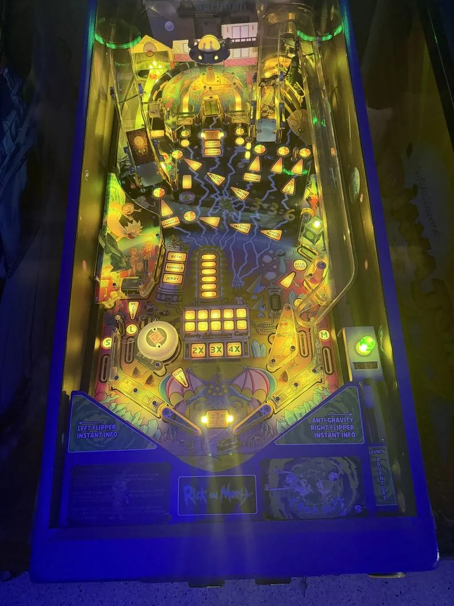

How to Read a Playfield
Most people play pinball the same way. They keep the ball alive, hit whatever it happens to hit, and wonder why the score is small. That is not a lack of skill. It is a reading problem. Every pinball machine is covered in instructions, and once you know where they are, the game stops being luck.
The four machines in the pinball row here make a good classroom, because they were built across twenty-seven years by three different makers and they still speak the same language: Indiana Jones (Williams, 1993), Ghostbusters (Stern, 2016), Total Nuclear Annihilation (Spooky, 2017) and Rick and Morty (Spooky, 2020).



Start at the bottom
Before you look at anything else, look at the last six inches of the table. This part is nearly identical on every machine made in the last fifty years.
- Flippers. The two bats you control. Everything else on this list exists to get the ball back to them.
- Slingshots. The two triangles just above the flippers. They kick the ball sideways when it touches them. You do not aim for them; they happen to you.
- Inlanes. The inner channels that roll the ball gently down to a flipper. Good.
- Outlanes. The outer channels that send it past the flippers and out of play. Bad.
Ghostbusters is the machine that proves the slingshots matter. On the Premium, the slings are magnetic. They can catch the ball in flight and throw it somewhere new, sometimes straight at an outlane. It is the feature the table is famous for, and it is a fast lesson in how much of pinball is decided in that bottom corner.
Then find the shots
Above the flippers, a playfield is a set of targets you can hit on purpose. There are only a handful of kinds.
- Ramps. Wire or plastic tracks that carry the ball up and return it to a flipper. A made ramp is the safest shot in pinball, because the table hands the ball back.
- Orbits. Lanes that run up one side, around the back and down the other.
- Standup targets. Small flat targets that stay put when hit.
- Drop targets. Targets that fall into the table when hit, usually in a row. Clear the row and something happens.
- Scoops and saucers. Holes that swallow the ball, hold it for a moment and kick it back out. This is usually where a machine starts something.
- Pop bumpers. The round, mushroom-capped kickers near the top. Like slingshots, they are chaos you pass through rather than a shot you make.
Indiana Jones is the place to practice finding them, because it is a widebody and Williams filled every inch. The ramps cross over each other, the mine cart runs up the right side and the idol sits in the center. It takes a few games before your eye stops sliding off it. That is normal. Pick one ramp and learn where the ball comes back.
Total Nuclear Annihilation is the opposite lesson. It is a single-level playfield in the style of the early 1980s, with none of the stacked ramps Indiana Jones is built on. What it has is targets: a grid of them that arms the reactor, a scoop that starts it, and a lane of drop targets that locks balls. With nothing to hide behind, it shows you how much game can be built from “hit that, then hit that.”
The lights are the instructions
This is the part most new players never notice. Set into the playfield are colored plastic windows called inserts, and each one sits in front of a shot. They are not decoration.
So the question to ask on every ball is not “where is the ball going,” it is “what is flashing.” The machine is pointing.
The question on every ball is not where the ball is going. It is what is flashing.
TNA makes this impossible to miss, because the lights lock to the music as the reactor heats up, and its lock lane tells you it is open with green arrows. The other three do the same thing more quietly: an arrow in front of a ramp, a lamp beside a scoop.
Read the card
On the flat apron at the very bottom of the table, below the flippers, there is almost always a printed card. It is the rules, in about a hundred words, written by the people who made the game. Nobody reads it. Read it. It will tell you how to start the main feature and what the big-scoring shots are, and that is all you need for a first session.
Every machine in the row also has a display, and it is the second set of instructions. Indiana Jones’s own card says so: start a mode, then “see display for mode instructions.” Ghostbusters does it on a dot-matrix display and Rick and Morty on a full screen, with the cast saying it out loud.
What the machine is actually asking for
Once you can find the shots and read the lights, every table reduces to the same three ideas.
- Modes. Hit a marked shot, usually a scoop, and the machine starts a timed objective with its own rules.
- Multiball. Lock balls in a marked place, then get them all back at once. This is where the big scores are on nearly every machine.
- The long goal. Finish enough modes or multiballs and you reach a final stage, usually called a wizard mode. Most players never see it. Knowing it is there changes how you play the first ball.
Here is what that looks like on each table in the row.
Indiana Jones
The mode shot is the saucer on the left marked Start Mode. Whichever of the twelve modes is lit on the playfield is the one you get. Multiball is a two-step read: knock down the bank of three drop targets to light the lock, then put three balls up the center shot, where the idol holds them. Play all twelve modes and the same saucer starts a six-ball finale called Eternal Life.
Ghostbusters
The main multiball is Storage Facility, and its lock is the left ramp. Each time the ramp is lit for a lock, shoot it; the third lock starts the multiball. Its modes are scenes from the films, arranged in three sets, and each set starts from a different shot. Which is exactly why you read the lights instead of memorizing the table.
Total Nuclear Annihilation
There are no modes to choose. Hit the reactor grid to arm the reactor and shoot the scoop to start it. Then overload it, and only then hit the lit targets to destroy it. Do it again, faster. Multiball is two balls in the lock lane and one more hit to release them. It is the cleanest example in the row of a machine with one question, asked repeatedly.
Rick and Morty
Modes here are called Adventures. Shoot the left or right ramp to qualify one, then the center scoop to start it. That same scoop starts multiball once two balls are locked. One scoop, three jobs, and the lights tell you which one it is doing.
A five-minute method for any machine
- Read the card on the apron.
- Find the ramps and note which flipper each one returns to.
- Find the scoop. That is probably how you start something.
- Launch, and on every ball ask one thing: what is flashing?
- Shoot that. When it stops flashing, look again.
That is the whole skill. Aim comes with time. Reading you can do tonight.
Quick answers
What do the lights on a pinball playfield mean?
The lit windows, called inserts, mark shots. Lit means the shot is worth something now; flashing means shoot it next; unlit means not yet.
What is the difference between an inlane and an outlane?
Inlanes feed the ball back to a flipper. Outlanes drain it out of play.
What is the easiest shot in pinball?
Usually a ramp, because a made ramp returns the ball to a flipper.
What is a mode in pinball?
A timed objective with its own rules, usually started at a scoop. Indiana Jones (1993) has twelve, all started at one saucer marked Start Mode.
How do you start multiball?
Usually by locking balls. On Indiana Jones you drop three targets to light the lock, then lock three balls. On Total Nuclear Annihilation you lock two in the lock lane and hit it once more.
Where are the rules on a pinball machine?
On a printed card on the apron below the flippers, and on the display as you play.
Rules are from each maker’s own card, manual or guide and the community rule sheets, and can change with a game’s code. Sources & further reading: IPDB — Indiana Jones: The Pinball Adventure · Stern — Ghostbusters basic guide · Tilt Forums — Ghostbusters · Total Nuclear Annihilation · Rick & Morty